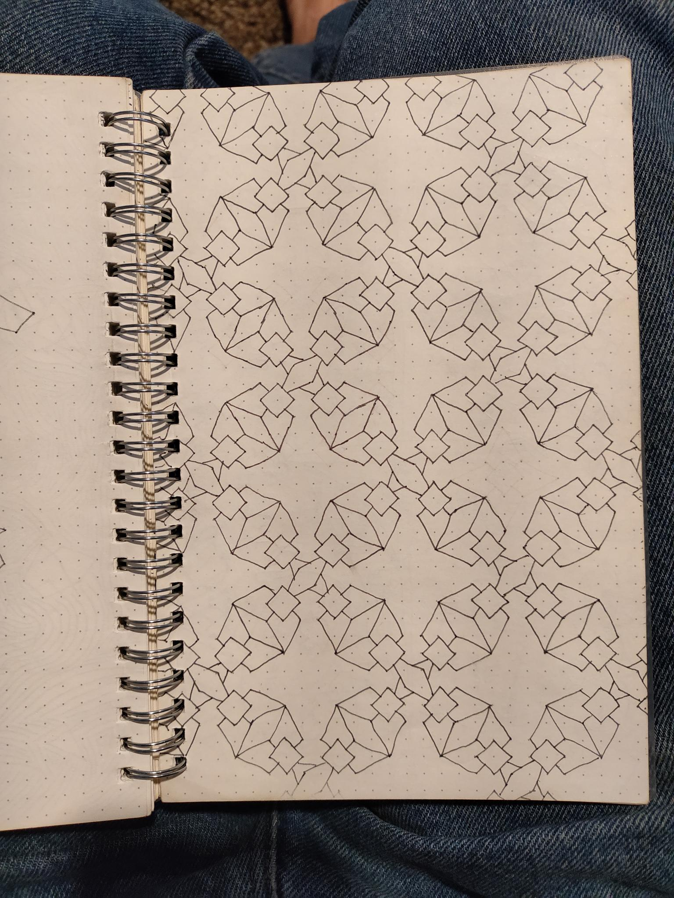
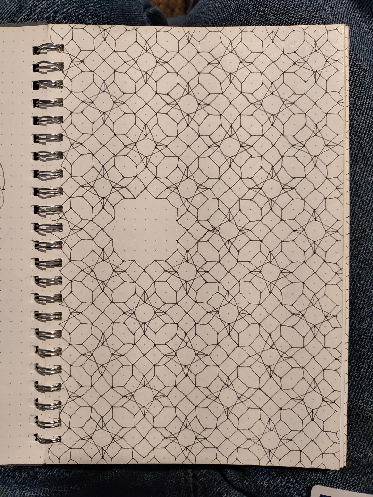
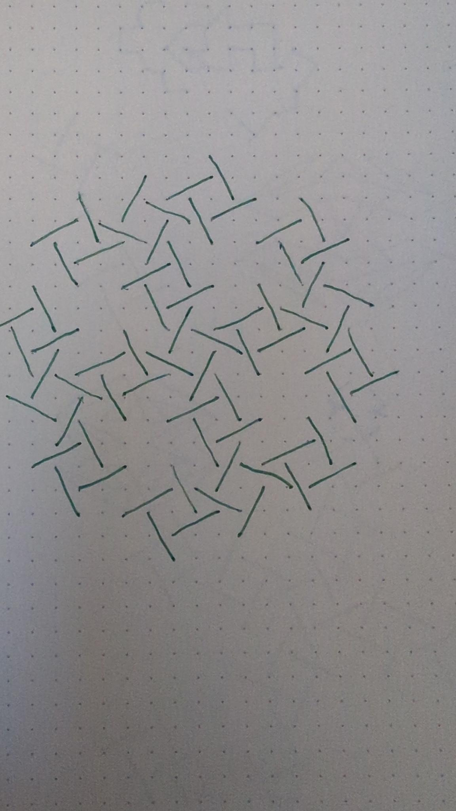
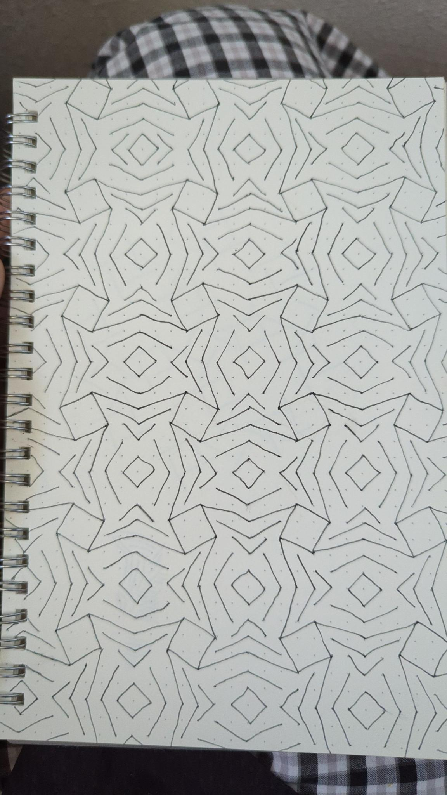
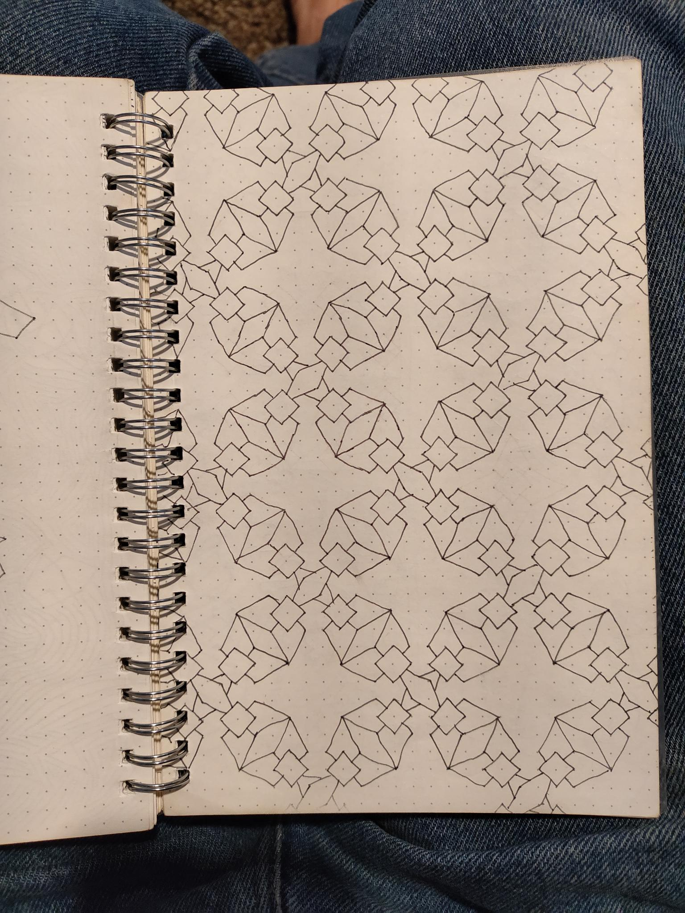
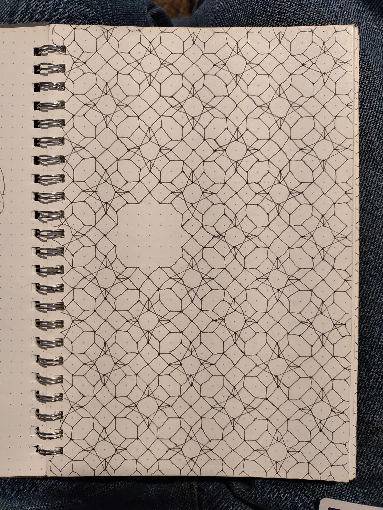
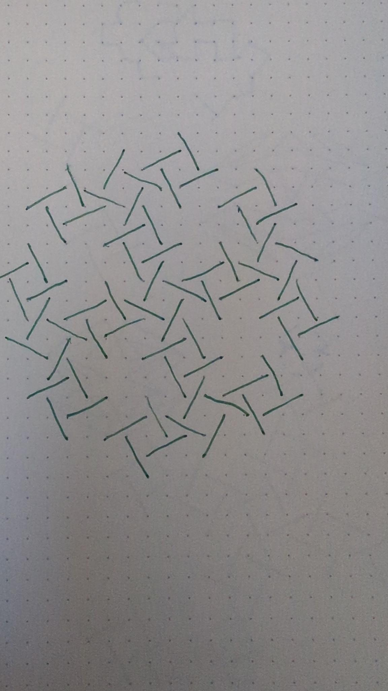
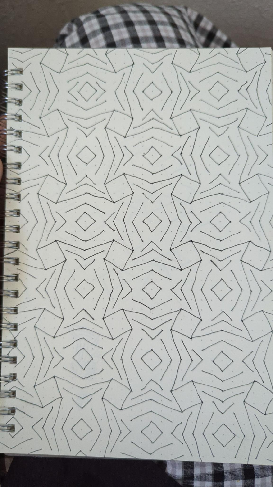

I love doodling on graph paper.
It’s just something I’ve done for a long time, since I was a kid. It’s something to keep my hands busy while I sit in church or class. It occupies just enough of my mind to keep me entertained, but not too much that I can’t pay attention. It’s perfect.
And over the years, I’ve gotten pretty good, if I don’t say so myself. I have something like 3 or 4 notebooks full of these sorts of patterns:
    
   
But that’s the problem, isn’t it. They’re in notebooks. I’m not even sure where they are. I don’t look at them or add to them anymore.
History
Ever since my very 2nd programming class (the first class was all terminal based), I had the idea for “automated graph paper”. All the lines line up with the dots. It wouldn’t be that difficult to make a program that had a bunch of dots and let you draw lines between them. Back then I had grand ideas of mirroring, selecting, copy/pasting, and repeating lines, but I didn’t have any way to execute them. I had an old, outdated, unsupported (even back then) freeGLUT C++ framework that my class gave me that I hacked together to show an array of dots on the screen, and was barely able to connect lines between them. And then the house of cards that was my code fell apart and I moved onto other things.
About a year later, after starting many other projects, and knowing way, way more, I discovered Python. I realized that my old idea I loved so much was still a cool idea, and I got excited and I ended up scrapping the entire codebase and rewriting the entire thing from scratch in Python (using pygame). I got it roughtly to where it was before, in about 4 hours. It’s pretty cool to see yourself improve in such an obvious way. I then added a bunch more features and made everything a lot nicer (pygame is an excellent API), including adding menus and options and a better repeating system. I eventually got stymied by the GUI though. At that point I hadn’t really done much with GUI’s, and I tried using pygame-gui, which isn’t a bad API, it’s just really not meant for what I wanted. I ended up writing huge, very nasty wrappers around their classes and it just wasn’t worth it. It again, became a house of cards and I saw that.
A couple months later, I had the idea to use Qt. It was something I’d wanted to learn for a while, but I never really had a project suited to it, until I realized this was perfect. Turns out, Qt is fantastic. There’s a reason it’s so popular. It definitely takes some getting used to, but it’s all very clean, and QtCreator is super handy. Using Qt allowed me to expand even further, and add more features far more intuitively.
A few months after that, I took a linear algebra course and had the realization that a bunch of the problems I had with repeating patterns and keeping track of coordinates could all be solved by using matrices for coordinates and multiplying by a transformation matrix. I then rewrote the whole codebase (again) to use numpy to represent dots and lines instead. That solved a ton of conceptual problems, and allowed me to add a bunch of features like mirroring and rotating and scaling. It also cleaned a the code up a ton too. That time it wasn’t a total rewrite, because I was able to re-use a lot of the PyQt GUI elements.
This is the last working version of GeoDoodle I had in Python 
All these versions had a few shared, fundemental problems, however:
- The coordinate systems where complicated. Even after I switched to using proper linear algebra, it was still complicated to keep track of, and involved writing my own coordinate system & utilies, essentially.
- Deployment. I love Python to pieces, and it’s the optimal programming language for a lot of things, but it really doesn’t deploy to other platforms very well. I always wanted to show my friends & family my cool program, but I never could, because trying to say “go into the terminal, git clone my repo, install python, and run the main.py file” really isn’t possible for my non-tech savvy mother. I tried a few things like pyqt5deploy and the Qt for Android tutorials, but I couldn’t get them to work
- Efficiency. When a pattern we want to repeat is small enough (meaning that more of them fit on the screen), and has too many lines in it, that means we could be drawing up to hundreds or thousands of lines on the screen, and if I want the user to be able to move around or add lines, depending on how I do it, that could mean they have to update in real-time. This was obviously a problem for freeGLUT (where I had to make raw OpenGL commands, which I didn’t know how to do correctly), and pygame (which isn’t really optimized for that sort of thing), but for PyQt you might not think it would be a problem. It was certainly better than the first 2, but it still got unusably slow under those conditions. I tried optimizing using OpenGL, but that only led down a deeper rabit hole I didn’t really want to go down.
Enter: JavaScript
Recently (as of this post) I got an internship writing TypeScript React code. I previously didn’t know Java/TypeScript, so I had a couple week long crash course on JS programming before I started. After I started, I immediately realized the potential JavaScript holds. Not because it’s good or proper (I think JS is terribly janky sometimes), but because it’s not. JS is geared towards writing UIs, which it does well. And part of UIs seems to be inherent jankiness, it seems. Lambda’s galore, strange, optional syntax (semicolons aren’t required, but everyone uses them anyway??), and objects that don’t act like objects in any other language I’d learned. It’s almost as if JS isn’t Object-Oriented, but instead Event-Oriented.
However it has a number of key advantages. Aside from being made for making UIs, like I mentioned, it’s supported everywhere and is made for deployment. Very quickly after learning it I made a couple projects, including Debate-Tracker, and EZRegex. I then realized: my favorite project, my “unique” idea (I haven’t researched if it actually is, and I don’t intend to), GeoDoodle, is perfect for JS. The project is largely UI elements, once the base part is done, I wanted to use it from both my computer and my phone, and SVG is the natural format for the project. Given that HTML integrates seemlessly with SVG, React was perfect.
So of course, I started from scratch and rewrote the whole thing again from the ground up in another language. It’s a lot easier the 4th (5th?) time you do it, because you know beforehand what a lot of the problems you’re going to run into are, and how to solve them, and you also know what you need to do in order to generalize things for future features so you don’t end up refactoring your code too many times.
I quickly got an MVP working (after a weekend of working on it obsessively), and kept adding to it. It now has multiple menus, including a controls menu instead of just using keyboard shortcuts, a help menu with a guided tour (surprisingly easy to make), multiple kinds of mirroring (you’d think it would be simple, but it’s more complex than you think), file saving, either natively to SVG files or to the local storage, basic repeating (is what I’m working on right now), and more. You can check it out at smartycope.github.io/geodoodle. I have it hosted on GitHub pages, and eventually I’ll probably by a URL for it to live at.
This time, I think I finally got it right. The code is clean and maintainable enough that I think when I inevitably come back to it in a year or so after I lose intrest, I’ll be able to pick it up again and just add features to it instead of rewriting it again. And the fact that I actually know how to use git now helps with that as well.
You can try it here, if you’d like: